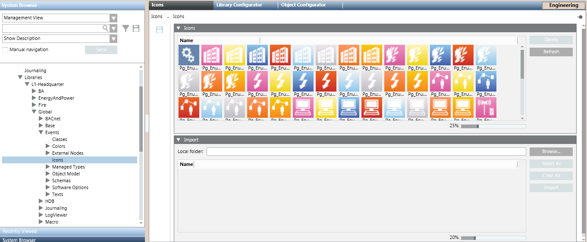
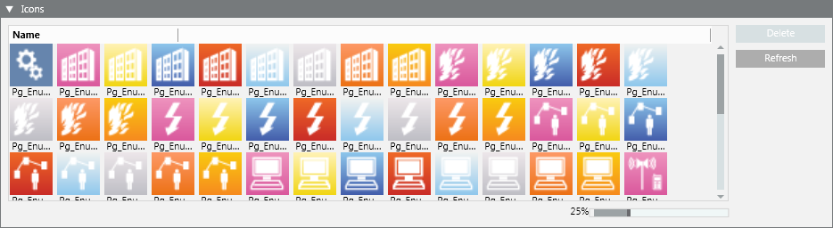
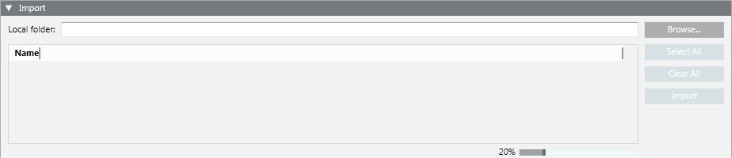

Icons Library
Icons is the library block that collects the icon images used in a system library. The supported file formats are BMP, JPG, PNG, and XAML.

In Engineering mode, when you select the Icons block of a system library, the Icons tab displays expanders where you can manage existing icons, as well as upload additional ones. For instructions, see Configuring Icons in a Library.

The Icons library block under L1-Headquarter > Global > Events is basic configuration provided by Headquarter that can be modified by Headquarter experts and Customer Support only.
Depending on their allowed customization level, authorized experts can manage icons at L2-Region, L3-Country, or L4-Project level.
Icons Expander
The Icons expander displays the icon images already uploaded to this Icons library.

Icons Fields | |
| Description |
Name | Display the icons available for the selected Icons library. |
Delete | Delete the icons selected in the list. This button becomes available when at least one icon is selected. |
Refresh | Refresh the icons area. |
Slider | Enlarge/shrink the icons size. Default size is 25%. |
Import Expander
The Import expander provides controls for importing icon files (BMP, JPG, PNG, or XAML) from a local directory. The imported icons are stored at the following path: [Installation Drive]:\[Installation Folder]\[Project Name]\libraries\[library folder]\[library]\Icons.

Import Fields | |
| Description |
Local Folder | Display the path of the directory containing the icons. |
Icons area | Display the icons included in the chosen directory. Each icon is also identified by a name. |
Browse | Open the Browse for Folder dialog box, and select a specific directory containing the icons to import. |
Select All | Select all the icons for the import. |
Clear All | Unselect all the icons. This button becomes available when at least one icon is selected. |
Import | Start the import of the icons from the local folder. This button becomes available when at least one icon is selected. |
Slider | Enlarge/shrink the icons size. Default size is 20%. |